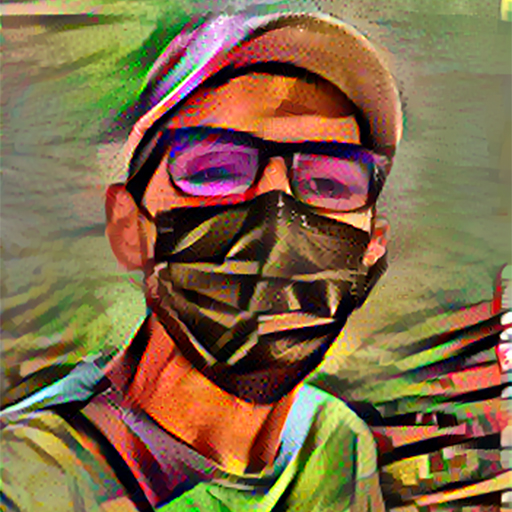

I am a Management Information Systems student who loves to learn new things and constantly improves himself.
I develop Machine Learning models and continue to advance in the field of Data Science. I usually share the models I developed on my Github account. I also have a Medium account that I blog occasionally.
My GNU / Linux adventure, which started with Debian as a kid, now continues with SUSE and Fedora. I enjoy trying and tampering with new distributions.
You can reach me from the cards below.
Please feel free to contact me so we can work together and help each other.